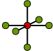

Reaction-Diffusion Systems
Hauptziel
Kontinuierliches System mit Volume Rendering darstellen
Diffusion
Differentalgleichung
$$\dot y = d \cdot \nabla^2 y $$
Reaction-Diffusion
Zwei Diffusions-Komponenten mit Interaktionsterm
Gray-Scott Modell
$$\partial_t a = d_a \nabla^2 a - ab^2 + f (1 - a)$$
$$\partial_t b = d_b \nabla^2 b + ab^2 - (f + k) b$$
Diskreter Laplace Operator
- 2D: Konvolution mit
$\begin{pmatrix}0&1&0\\1&-4&1\\0&1&0\end{pmatrix}$
- 3D: Konvolution mit 
Numerisch Besser
-
2D:
Konvolution mit
$\begin{pmatrix}0.25&0.5&0.25\\0.5&-3&0.5\\0.25&0.5&0.25\end{pmatrix}$
-
3D:
Entsprechende Verallgemeinerungen möglich...
Aber Rechenaufwand steigt hier kubisch!
Euler-Methode
- $\dot{y} = f(y), \quad y_0$ gegeben
- $y_{n+1} = y_n + h \cdot f(y_n)$
Euler explodiert numerisch!
$\dot{y} = \begin{pmatrix}0&1\\ -1&0\end{pmatrix}y$
Runge-Kutta
- $\dot{y} = f(y), \quad y_0$ gegeben
- $k_1 = f(y_n)$
- $k_2 = f(y_n + \frac{h}{2} k_1)$
- $k_3 = f(y_n + \frac{h}{2} k_2)$
- $k_4 = f(y_n + h k_3)$
- $y_{n+1} = y_n + \frac{h}{6}(k_1 + 2 k_2 + 2 k_3 + k_4)$
Berechnungsschritte
- Naive Implementierung: 5 Texturen
- Mit Tricks: 2 Texturen
Runge-Kutta Tricks
- Zwei Zustände in einer Textur: $(r,g)$ und $(b,a)$
- Berechnungsschritte
- $(y, 0) - (0, 0)$
- $(y+\frac{1}{2}k_1, k1) - (y, \frac{1}{6}k_1)$
- $(y + \frac{1}{2}k_2, k_2) - (y, \frac{1}{6} (k_1 + 2 k_2))$
- $(y + k_3, k_3) - (y, \frac{1}{6} (k_1 + 2 k_2 + 2 k_3 + k_4))$
- $(y + \frac{1}{6} (k_1+2k_2+2k_3+k_4, 0) - (0, 0)$